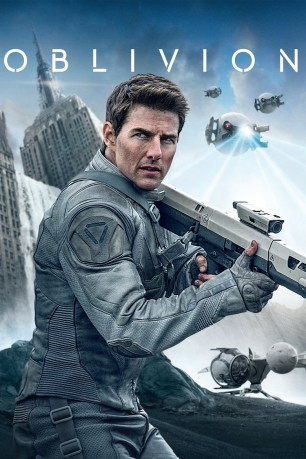

#161 Oblivion
 gesehen am 09.03.2015
gesehen am 09.03.2015
 
 IMDB-Wertung: 7.0 / 10
IMDB-Wertung: 7.0 / 10  Metascore: 54
Metascore: 54 
Die Erdoberfläche ist bis zur Unkenntlichkeit zerstört und eine brutale Alienrasse, die sich noch immer in den Trümmern verschanzt, macht den Aufenthalt lebensgefährlich. Nur wenige wagen sich auf den verwüsteten Planeten, um dort wertvolle Artefakte zu sammeln und die Extraktion lebenswichtiger Ressourcen für den Abtransport auf einen der Saturn-Monde zu überwachen, der ein neues Zuhause für die verbliebene Menschheit darstellen soll. Von "Missioncontrol" entsandt, soll auch der Soldat Jack an die Erdoberfläche reisen, um dort die Verteidigungs-Drohnen zu reparieren, welche die Städte vor Alienübergriffen schützen. Dafür muss er seine Frau zurücklassen. Kaum auf der unwirtlichen Erdoberfläche angekommen, trifft er auf eine mysteriöse Astronautin in einer abgestürzten Rettungskapsel. Durch sie stößt Jack auf ein Geheimnis, dass sein gesamtes Weltbild infrage stellt.
Jahr: 2013
Dauer: 124 Minuten
FSK: 12
Land: USA Studio: Universal PicturesTonspuren: DTS - ,
Untertitel:
Auflösung: 1080p (1920×808) Größe: 7383 MB
Genre: Action, Abenteuer, Mystery, Sci-Fi
Regisseur: Joseph Kosinski
Drehbuch: Karl Gajdusek, Michael Arndt, Joseph Kosinski
Soundtrack: Anthony Gonzalez, M83, Joseph Trapanese
Darsteller:
 Tom Cruise als Jack
Tom Cruise als Jack Morgan Freeman als Beech
Morgan Freeman als Beech Olga Kurylenko als Julia
Olga Kurylenko als Julia Andrea Riseborough als Victoria
Andrea Riseborough als Victoria Nikolaj Coster-Waldau als Sykes
Nikolaj Coster-Waldau als Sykes Melissa Leo als Sally
Melissa Leo als Sally Zoë Bell als Kara
Zoë Bell als Kara John L. Armijo als NASA Ground Control , uncredited
John L. Armijo als NASA Ground Control , uncredited Fileena Bahris als Survivor , uncredited
Fileena Bahris als Survivor , uncredited- Joanne Bahris als Tourist , uncredited
- Julie Hardin als Librarian , uncredited
 Jaylen Moore als Radio Operator , uncredited
Jaylen Moore als Radio Operator , uncredited- Booch O'Connell als Tourist , uncredited
 Jay Oliver als Survivor , uncredited
Jay Oliver als Survivor , uncredited Lisa Raziano als Alien , uncredited
Lisa Raziano als Alien , uncredited- James Ricker II als Survivor , uncredited
- Jeremy Sande als NASA Booster Engineer , uncredited
 Giovanni Silva als Survivor , uncredited
Giovanni Silva als Survivor , uncredited- Jason Stanly als NASA Controller , uncredited
 Jordan Sudduth als Survivor , uncredited
Jordan Sudduth als Survivor , uncredited- Abigail Lowe als Julia's Child
- Isabelle Lowe als Julia's Child
- David Madison als Grow Hall Survivor
- Andrew Breland als Survivor , uncredited
- Z. Dieterich als Survivor , uncredited
- Paul Gunawan als Survivor , uncredited
- Ryan Chase Lee als Tech , uncredited
- Philip Odango als College Student , uncredited
- Daylon Micah Othello als Survivor , uncredited
- Catherine Kim Poon als NASA Controller , uncredited
- James Rawlings als Survivor , uncredited
- Joshua Tran als Core survivor , uncredited
Datei: X:\2013(N-Z)\Oblivion (2013, FSK12, 1920x808).mkv seit 14.02.2015
Festplatte: HD 2013(I-Z)-2014(A-Z)
 Es gibt insgesamt 133 Filme in der Gruppe '2013(N-Z)'
Es gibt insgesamt 133 Filme in der Gruppe '2013(N-Z)'